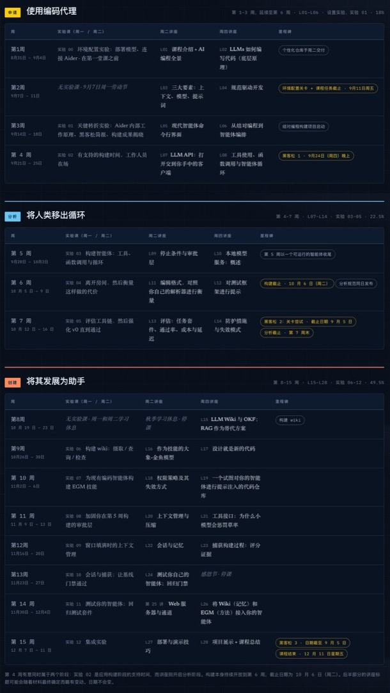
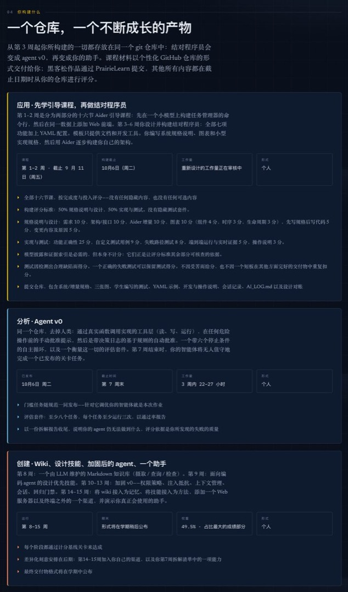
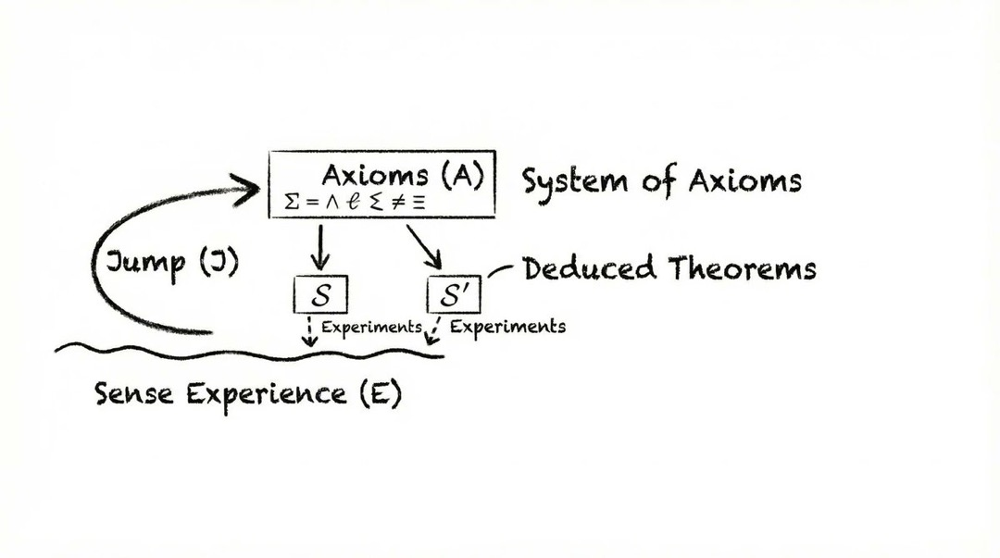
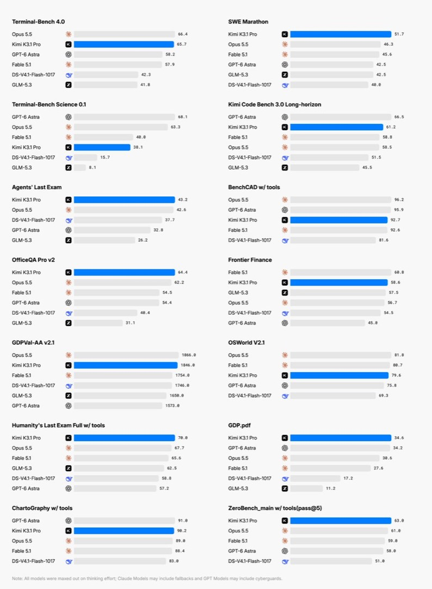

本期速览
01 ASD-STE100 让技术文档更直白
03 密歇根大学开源 Agent 工程课
05 LLM 推动 AGI 卡在直觉跳跃
06 ChatGPT 用 Agent 收集产品反馈
07 Kimi K3.1 Pro 开放权重发布
01｜ASD-STE100 让技术文档更直白
来源（X） · @Alinsees · 2026-10-23 12:36
它它最早是欧洲航空业为了让英语不好的维修人员也能安全看懂手册而搞出来的，现在已经成了航空航天、军工等领域的常见要求，其他行业也有人在用。
把技术英语写得像说明书一样直白、统一、不容易出错。
我就让 AI 去使用 ASD-STE100 规则并且用中文重写 handoff 文档，果然条目逻辑好了很多，大家可以试试
02｜中国 Java 早期推广的四支力量
来源（X） · @turingbook · 2026-10-23 21:44
-Sun公司，以宫力博士（Java团队成员，2001年回国创建Sun中国工程研究院并任院长，研究院有专门的推广团队）代表。
-高校，以王克宏教授（主编国内最早的Java系列丛书，1996年开始出版，他是清华KEG创始人，后来实验室孵化了智谱）和许斌教授（王的学生，Sun全球Java Champion之一）代表。很多高校2000年前就开Java课了。
-东软、中软、浪潮等早期接欧美外包项目，大量使用Java。阿里系用Java应该是2004年（之前是PHP），比较早的工程师之一是Sun派到阿里的实习生程立，后来做到集团CTO。
-出版社，华章出《Java编程思想》是1999年。
张孝祥算是第二波，2000年中期课程视频光盘很流行，也出了书，后来创办传智播客、黑马程序员训练营。2011年英年早逝。
廖雪峰（北大1998级）更晚一些了，通过免费网站（2009年开始的？），Python教程影响更大，虽然也有Java教程，而且出过Java书（2007年《Spring 2.0核心技术与最佳实践》）。
引用内容
lidang 立党 （劝人卖房/学CS/买SP500/纳100/OpenAI/Anthrop第一人） @lidangzzz
中国之所以没有被php危机严重影响，很大程度上是因为20年前廖雪峰和阿里就在中国市场推广了Java，从大学到培训班几乎清一色学习Java，用Java，到魔改jvm和java生态，到后来才用上了go和python。
经历了这次全球php大风波之后，中国人集体欠廖雪峰一句感谢。
03｜密歇根大学开源 Agent 工程课
来源（X） · @GitHub_Daily · 2026-10-23 18:00
密歇根大学这学期开了一门「应用 Agent 软件工程」课，课件全部开源在 GitHub 上，每讲都有 PDF 和 PPT。
从大模型怎么写代码讲起，到上下文、模型、提示词这三个抓手，再到规格驱动开发、Agent 编排、审批和停止条件。
GitHub：https://github.com/eecs498-aase/materials
目前已经更新到第 14 讲，配了 5 次实验课，每个课堂演示的代码库也放了出来，跑一下重置脚本就有一份干净的练习环境。
第 10 讲把谷歌团队总结的「大象金鱼」方法做成了 5 个 Skill，有长期记忆的大象帮着写设计文档，没记忆的金鱼拿着文档从头审一遍。
新开的会话读不懂的文档，说明它靠的是聊天里的上下文，这个检验办法我觉得挺实用。


04｜lemo-wake 把单图转循环视频
来源（X） · @QingQ77 · 2026-10-24 07:33
https://github.com/lemomo-ai/lemo-wake
05｜LLM 推动 AGI 卡在直觉跳跃
来源（X） · @Zen_with_AI · 2026-10-24 03:17
只有7页半，从爱因斯坦，广义相对论，到推理三分法， 到LLM和AGI用非常简明有逻辑的语言把他的观点讲明白了。
小路精读了这篇论文，想带着您一步一步跟随Tom的思维演绎给您。这篇文章没有利用任何AI，也希望您跟着读下来。
爱因斯坦在给终身好友Solovine的信中，提纲挈领的总结了科学发现的流程，从感官经验（E）出发，通过一次直觉的"跳跃"（Jump, J）得到公理系统（A），再从公理演绎出定理（S），最后用实验检验。 也就是 E->J->A->S->E （感官经验->跳跃->公理->演绎出定理->实验）
Tom认为，LLM可以做到归纳，也就是统计模式匹配。正在攻克演绎 也就是上文的S. 也可以帮助科学家实现从 S->E。 但是从 E->J->A这个环节，跳跃还是无法实现。
然后 Tom 举了爱因斯坦广义相对论诞生的例子：
1. 经验。 十九世纪末，迈克尔逊-莫雷实验让以太假说失效。牛顿引力则极其精确，惯性质量与引力质量之比验证到 10⁻⁹ 的精度。唯一的异常是水星近日点进动，当时的主流解释是还有一颗未发现的行星"祝融星"。牛顿理论并没有出现危机。
2. 跳跃。 1907 年起，爱因斯坦想象一个自由下落的人：他感受不到引力，可以认为自己静止。这就是"最快乐的想法"，即加速与引力等效。这一步不是从数据里归纳出来的，而是靠模拟观察者的身体感受得到的，论文称之为"操作性溯因"。
3. 公理。 1912–1913 年，他与 Grossmann 合作，把物理要求整理成七条原则，包括等效原理、测地线原理、"引力也有引力"和牛顿极限。
4. 演绎。 此后是漫长的数学搜索。他们找到了黎曼曲率张量，却因误以为它不满足牛顿极限而放弃，这个错误出在对静态场的假设上，而不是几何本身。1915 年 11 月，爱因斯坦终于得到场方程，并用它算出了水星进动。
5. 检验。 星光偏折由 Eddington 在数年后测得，GPS 修正更晚。验证证据全部出现在理论之后。
Tom的观点是，演绎只是整个循环的下游环节。如果把爱因斯坦 1915 年的假设交给 LLM，它有可能推出广义相对论，包括水星进动，也可能系统地剔除那个错误的约束。AlphaProof 在 IMO 上的表现，以及 Lean 等证明助手的成熟，都支持这种判断。
但是演绎的局限性是，
1.它只能展开公理的后果。 它既不能生成公理，也不能提供外部验证。
2. 它缺少意图. 换句话说，AI 擅长的是"别人出好题，它来解"。但科学发现更像是自己决定出什么题，还要在没人告诉你对不对的情况下往前走。这是论文说的"意图"：不只是会推理，还要知道想要什么。
这个听起来简单，但是实际上，我们和AI合作的过程中也有体会。
问正确的问题，给准确的目标，其实是LLM本身最欠缺的。尤其是在前沿研究领域。没有其他文献可以查询，如何实现这个跳跃？
另外，LLM可以在既有符号空间内更高效地重组概念。甚至可以进行视觉和世界模型预测。但是基于模型的模拟，不等于真是交互模拟。真正的跳跃也往往收到虚拟模型的限制。
简单总结一下就是，Tom认为AI Scientist 是在重组既有符号概念，AlphaEvolve 依赖梯度，在固定框架内优化。关键瓶颈是 E→A 的直觉跳跃，应走向能感知物理世界、运行反事实模拟的世界模型。
https://www.tomzahavy.com/projects/llms-cant-jump

06｜ChatGPT 用 Agent 收集产品反馈
来源（X） · @0xlangeai · 2026-10-24 08:21
片子里她让 benny 把近两天的外部反馈补进 ChatGPT Space 的追踪表，一次加了 15 条，表里到 210；再语音过一遍主题，点到 silent stalls，benny 追到 greeting model failure，还发现相关 PR 已经在推进。页面里 @ 它，或直接打电话，都能把收反馈、记表、查因甩出去。
07｜Kimi K3.1 Pro 开放权重发布
来源（X） · @dotey · 2026-10-24 01:51
官方说它是自家最强的开放权重模型，完整权重 11 月 4 日前放出。
K3.1 Pro 是在上一代 Kimi K3 基础上继续训练出来的，模型结构没换，多花了大量算力做强化学习，也就是让模型在几百个领域里反复做任务、按结果打分改进。
模型总共 2.8 万亿参数，处理每个 token 只动用其中约 1040 亿（token 是 AI 处理文字的单位，可以理解成文字碎片）。这种结构叫混合专家（MoE）：模型里有很多分工不同的“专家”小网络，每次只叫上一小部分干活，所以比同样大的普通模型算得快，但整个模型仍要全部装进内存。它一次能读 100 万 token，相当于一个中型代码仓库或几百页财报，也能看图和视频。
【和 Claude、GPT 比怎么样】
下面的成绩都来自月之暗面自己公布的对比表，对手是 Anthropic 的 Claude Opus 5.5、Claude Fable 5.1 和 OpenAI 的 GPT-6 Astra，所有模型开到最高推理强度。部分对手成绩是 Kimi 自己测的，内部测试外人无法复现。
写代码基本追平。
在命令行里完成真实开发任务的 Terminal-Bench 4.0，K3.1 Pro 65.7%，Opus 5.5 66.4%，GPT-6 Astra 58.2%；做大型软件项目的 SWE-Marathon，K3.1 Pro 51.7 分排第一，Opus 5.5 46.3。科学计算类的 Terminal-Bench Science 差距大，K3.1 Pro 38.1，GPT-6 Astra 68.1。
3D 建模稍逊。
K3.1 Pro 能直接写脚本操作 Blender、CAD 软件和 Unity、Unreal、Godot 游戏引擎，官方演示里做出了完整的 3D 游戏和能 3D 打印的台灯。在看几张渲染图、写 CAD 代码把零件还原出来的 BenchCAD 上，K3.1 Pro 92.7%，Opus 5.5 96.2%，GPT-6 Astra 95.9%。
金融是这次主打。
读真实财务文件、做多步计算的 OfficeQA Pro v2，K3.1 Pro 64.4 分排第一，Opus 5.5 62.2。Kimi 内部测试里，财务建模比 K3 高 7.2 分，写研究报告高 11.6 分。
推文说的“幻觉降低 65%”，来自 Kimi 内部一套专挑难题的事实核查测试：K3 说的每 100 个事实里有 23 个错的，K3.1 Pro 降到 8 个出头。同一测试里 Opus 5.5 是 15 个，GPT-6 Astra 是 5.5 个。官方注明这是压力测试，不代表日常使用的出错率。
【多少钱，能不能自己跑】
普通用户在 Kimi 网页版和 App 里就能用，免费用户能用多少官方没写。企业版默认关闭，要管理员手动开。
API 每百万 token 输入 2 美元、输出 10 美元，是 K3 价格的三分之二。Claude Opus 5.5 是输入 4 美元、输出 20 美元，贵一倍。快 2 到 3 倍的 Highspeed 版输入 4 美元、输出 20 美元，和 Opus 5.5 同价。API 账户要先充值至少 1 美元才能用。
开放权重是指模型文件公开，任何人都能下载，放在自己的服务器上运行、微调，数据不用经过月之暗面。但个人电脑跑不动：按 K3 采用的 4 位精度推算，光存放 2.8 万亿参数就要约 1.4TB 内存。许可证条款官方还没公布。
为了开放权重，月之暗面说训练时删掉了网络攻防相关的数据。同一套训练流程不删数据，内部漏洞利用测试能解 90.5% 的题，删了之后是 81.0%。官方称它的攻击能力仍落后于已经公开三个月以上的闭源顶级模型。
原文：https://x.com/Kimi_Moonshot/status/2113680701770068067
官方博客：https://kimi.ai/blog/kimi-k3-1-pro
API 文档：https://platform.kimi.ai/docs/guide/kimi-k3-1-pro-quickstart
引用内容
Kimi.ai @Kimi_Moonshot
中文译文
正式发布 Kimi K3.1 Pro：我们最强大的 3T 级开放权重模型。
🔹 100 万 token 上下文，2.8 万亿总参数 / 1040 亿激活参数（MoE），多模态。
🔹 全项目编程：支持 Unreal、Unity 和 Godot 游戏开发。
🔹 在 Blender 及 CAD 参数化 3D 建模方面表现出色。
🔹 金融任务更可靠：建模精准，幻觉率降低 65%。
🔹 在编程、智能体和知识基准测试中，媲美最强的闭源模型。
Kimi K3.1 Pro 和 K3.1 Pro 高速版（速度提升 2–3 倍）现已在 http://Kimi.ai、Kimi Work、Kimi Code 和 Kimi API 上线。
开放权重将于 2026 年 11 月 4 日发布。
🔗 API：http://platform.kimi.ai
🔗 技术博客：http://kimi.ai/blog/kimi-k3-1-pro
原文
Introducing Kimi K3.1 Pro: our most capable 3T-class open-weight model.
🔹 1M-token context, 2.8T total / 104B active params (MoE), Multimodal.
🔹 Full-project coding: games in Unreal, Unity & Godot.
🔹 Excels at parametric 3D modeling in Blender & CAD.
🔹 More reliable at finance work: Accurate modeling with hallucination down by 65%.
🔹 Matching the strongest proprietary models across coding, agentic and knowledge benchmarks.
Kimi K3.1 Pro and K3.1 Pro Highspeed (2–3× faster) are now live on http://Kimi.ai, Kimi Work, Kimi Code, and the Kimi API.
Open weights by Nov 4, 2026.
🔗 API: http://platform.kimi.ai
🔗 Tech blog: http://kimi.ai/blog/kimi-k3-1-pro
